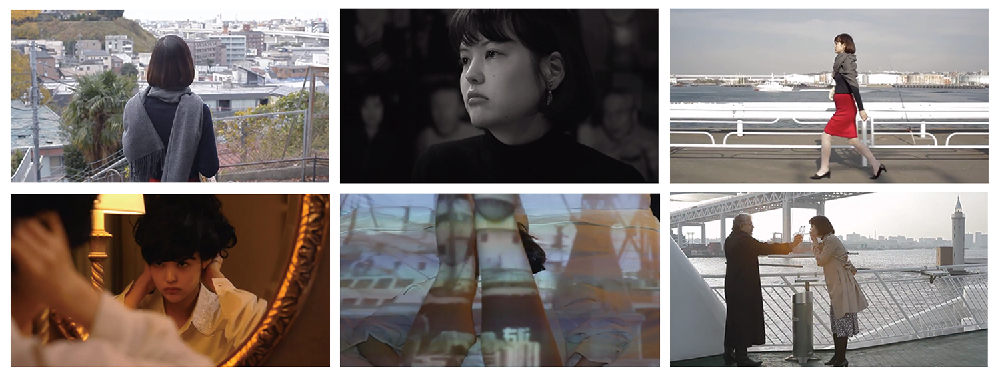
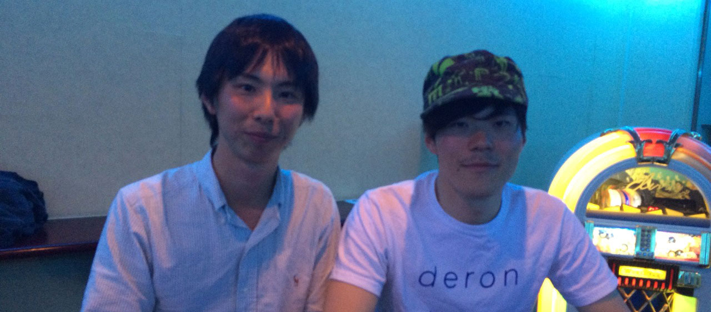
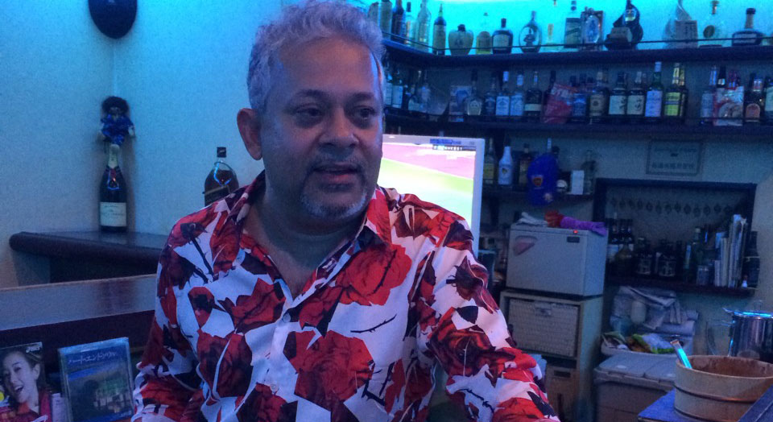
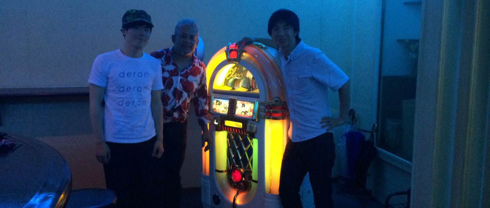

MV

LYRICS
IKIL
作詞・作曲 さわいかん
演奏 deronderonderon
偽ったって内緒だよ
いらなくっても非道なの
迂闊 細胞 甘えないよ
行く血路話してよ
満たしてく 緒を離さないよ
足んないよ 愛も死も
体温にも 遠くを知るの
問わない様子 描こう
伺う手で押してよ
羽化す 細胞 聞いてよ
行く痛いの すぐ知って
浮かばれない朝 問わないよ
足んないよ 過去明日も
体温にも 遠くを知るの
監督INTERVIEW
"IKIL"MV監督 高野徹さん、
出演者Luckyさんと"生きる"を振り返る
「Life is adventure」
さわいかん（以下、さわい）：本日はお時間を頂きありがとうございます。"IKIL"MVの監督の高野徹さんと、出演してくださったここLUCKY'S PLACEのオーナーであるLuckyさんです。よろしくおねがいします。
高野徹（以下、高野）：よろしくおねがいします。
Lucky：よろしくおねがいします。
さわい：まず、高野さんの自己紹介をお願いします。
高野：高野徹と申します。映画監督をやっております。学生の時から自主映画を撮っていました。
一番最初は、自分についてのセルフドキュメンタリーを撮ったり、すごく好きな映画監督の神代辰巳（くましろたつみ）についての映画を撮ったりだとか、今後は長編映画を撮りたいですね。
どこかで公開したり海外に持って行きたいと思っています。
さわい：僕的に高野さんは短編映画のイメージが強いんですけど、短編映画をよく作っていた理由とかはあるのですか？
高野：やっぱり、体力がないからじゃないかな（笑）資金力も人を拘束する力もないし、っていう理由だね。 やっぱり90分とかの長編映画を作るのってすごい大変ですよ。
さわい：なるほど、そうなんですか。早く高野さんの長編映画が見たいです！
ではLuckyさん、自己紹介をお願いします。
Lucky：いいですよぉー！僕はLuckyと言います。お店（LUCKY'S PLACE）を開いて11年が経ちます。
出身はスリランカです。カバン１つだけ持って日本に来たので、当時は友達も知り合いもいませんでした。
でもね、「Life is adventure」ですよ。まぁ今はできないですけどね（笑）
今ではお客様のおかげでお店を構えることができました。
昔、中華街でとても可愛がってもらいました。"CHO'S PLACE"というバーでとてもお世話になりました。
その時のことは未だに忘れる事はできませんね。そこにいたから、今の僕がいるんですよね。周りのおかげですよ。
さわい：そうなんですか！僕らも色んな人達にお世話になりながら生きれてます。もっと感謝します。
高野：今回、"IKIL"を製作するにあたって、横浜の色んな人と知り合う事ができたんだよね。
吉田町の専務理事の佐久間さんにまずは知り合って、僕が「かっこいい外国人の方を探してるんですよね。」って話をしたら、Luckyさんを紹介してくださったんだよね。
今では、佐久間さんや吉田町の皆さんと仲良くなって、毎週のように飲みにいってるんです！（笑）
それに今年の夏は、一緒に吉田町の神輿をかつがせてもらうことになったんですよ。
"IKIL"のMVをスタートにして人の繋がりが増えたんだよね！ありがとう！
あと、撮影場所として提供していただいた野毛の"papa john"もたまたま僕とさわい君で入ったお店なんだよね。
"papa john"のケンさんと出会い、佐久間さんと出会い、Luckyさんと出会い。
とても良い機会を頂きました。
さわい：そうですよね！偶然と必然が重なり合ったようなそんな感覚です！
 「加藤さんと僕」と「横浜」の対決
さわい：MVの話に移りたいんですが…
高野：いきなりだけど、僕からさわい君に質問！今回のMVの出来はどうでしたか？
さわい：いきなりそうきましたか！僕は、すごく今の高野さんが詰まってる作品になってるなと思いました。
すごい満足しています。めちゃくちゃおもしろいと思ってます！
なぜかと言うと、今回の全曲MV計画のコンセプトとして「同世代でどういう作品を作れるのか」というのをすごく重視したかったんです。
その中で、「今の僕ら」が表現できる作品、言い方が良いのか悪いのか分からないですけど、背伸びをしすぎない「ありのまま」の作品っていうのを裏テーマとして掲げていたんです。
「今」をちゃんと残しておきたいっていう想いがめちゃくちゃ強いですね。
これからもっともっとおもしろくなるんだぜ？って宣言している感覚です。
そういう意味で、"IKIL"は高野さんの感覚や感性がめちゃくちゃ凝縮されてるように感じました。
高野：それは嬉しい！
さわい：今回の製作で大変だった事ってありましたか？
高野：ありますよー。さわい君と話をしたときに、さわい君から「横浜で撮りたい」ということと「バンドの演奏シーンは無し」っていう要望があったよね。
バンドの演奏シーンが無いっていうことに最初はそんなに気がまわらなかったけれど、いざ編集の段階ってときに、「歌うシーンや演奏シーンが無いって本当に大変だなぁ」って痛感しましたね（笑）でも、作品に仕上げることができてよかったです。
さわい：そうだったんですね！初耳！色々大変でしたよね、撮影は。寒かったし、風も強かったし、なんて言っても主演の加藤智子さんに全面的に協力していただきましたよね！
高野：そうですね。
加藤智子さんは、『あの娘が海辺で踊っている』という映画に出演してて。
すごく鋭い目をされていて、「この人をいつか自分の作品で撮りたいな」とずっと思っていたんです。
それでさわい君と打ち合わせをしていく中で「女性」というキーワードが出て来て、じゃあ加藤さんだ！と思いつき、あの手この手を使って加藤智子さんにオファーしました。
さわい：改めて、作品を作ることの大変さや、たくさんの人の協力がいかに重要であるかを感じました。 じゃあ、"IKIL"のMVの見所ってどこですか？
高野：それはもう、加藤智子さんですね！僕のテーマとして、横浜の今撮りたい場所を選び、そこを加藤さんに歩いてもらって、その風景と加藤さんどっちが勝つのかな。
ということがありました。どちらが勝ったは、見て頂いた人が判断をしたらいいのですが。
「加藤さんと僕」と「横浜」の対決は良い勝負だったんじゃないでしょうか？
さわい：せめぎ合いでしたよね！
 前衛的なことをしながらも、大衆性も兼ね備えていて、そこがしっかりしている。
さわい：ちょっと話が戻るんですけど、"IKIL"を初めて聴いた時の印象ってどんな感じだったんですか？
高野：すっごく暗い曲だなぁ。なんでこんな暗い曲やんなきゃいけないんだろうって思ってました（笑）
ちょっと嫌になりましたよ（笑）
でも、何回も聴くうちに印象がちょっとずつ変わってきたんですよ。さわい君達が「バンドをぶち壊す」と言ったり、常識の枠にとらわれないやり方をしている人達だけあって、"IKIL"の歌詞とか理解できなかったんだよ。
テーマは「遺伝」らしいけど、全然わかんなくて（笑）とは思いつつも、ドンドン聴き込んでいくうちに身体に染み込んできたんだよね。
前衛的なことをしながらも、大衆性も兼ね備えていて、そこがしっかりしているからなんだかんだで取っ付きやすい。身体に入ってくるんだろうな。
そのバランスを両立している"IKIL"やderonderonderonというバンドはすごいなぁと思いました。今後もバランスを保ちつつ突き進んでいただきたい！
さわい：うれしい！！！！！やりたいことだらけですよ！！！！！
先ほど高野さんが「遺伝」をテーマにしてるって言ってたんですけど、これについて少し補足をしますと、今の僕らが存在するっていうのは、親がいるからなんですよね。
そして父親も母親も存在するっていうのは、おじいちゃんやおばあちゃんがいるからなんです。
そうやってずーっと遠い自分の歴史を遡りたいって思った時期がありまして、その時にこの曲を作りました。
で、そこで重要になってくるのは、「女性」の存在なんです。女性は本当に偉大な存在だと思います。
女性がいないと僕らは成立してないし、僕は生きていけない。その偉大さを噛み締めながらこれからも生きていきたいと強く感じてます。という曲です。
だから、MVも「女性」をキーワードに作ろう！ってなりましたよね。
Lucky：そうだね。女性は本当に偉大。
女性は身体に生命を宿すよね、そして僕ら男には分からない痛みを経験して、その生命を世に放つんですよ。母親は自分の子どもだから、怒るんですよ。
他人の子どもには怒らないでしょ？自分の子どもがかわいいの。女性に暴力をふるう男なんてありえないよね。
女性は大事にしなきゃだよ！
さわい：はい！そう思います！ありがたいお話をありがとうございます。
最後に、Luckyさんは撮影の時の思い出とかってありますか？
Lucky：ありますよー。撮影は１２月でしたよね。すごく寒かったですね。
朝まで仕事をやってるので眠たかったのに、高野さんに無理矢理起こされて、黒のトレンチコートを着せられて、寒い中船に乗ったんですよ！（笑）
船の上で撮影をしたんだけど、タバコに火をつけるシーンで、風が本当に強くて上手くいかなくて、その短時間にタバコを何本吸ったか！（笑）
さわい、高野：はははははは！（爆笑）
Lucky：しかもほんのちょっとしか映ってないし！でも、本当に素晴らしい撮影だったよね。呼んで頂けてほんとに感謝の気持ちで一杯ですよ。
これからもderonderonderonさんと高野さんを応援するのがこれから僕のもう１つの仕事ですね！
さわい：おおおお！ありがとうございます！
高野：Luckyさんが味方についたら心強いよね！
Lucky：若者を応援するのが、我々の役目だからね。
高野：ラッキーさん、次は主演で！
Lucky：はい。喜んで！

高野徹
-----
1988年生まれ、横浜市在住。横浜国立大学大学院都市イノベーション学府修了。 主な作品に『映画はエンジン』（2009年）、『濡れるのは恋人たちだけではない』（2010年）、『ARU -在』（2013年）がある。隅田川野外上映会を主宰。